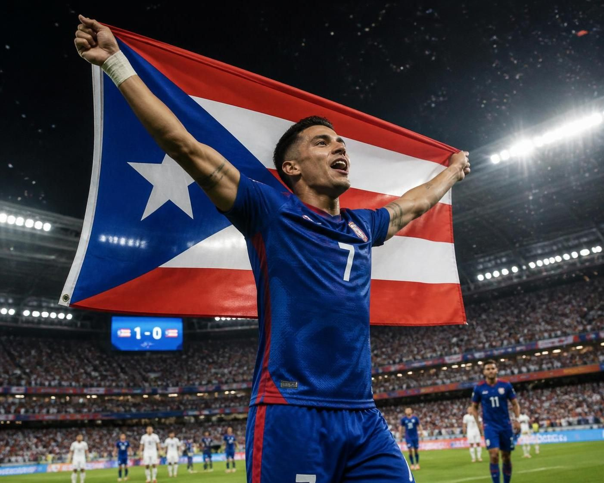

Let me tell you what it's like to grow up playing soccer in Puerto Rico. You fall in love with the game the same way kids everywhere do…chasing a ball in the street, watching the World Cup at 4 a.m. with your dad because of the time difference, picking your favorite player and trying to copy his moves in the backyard. But there's a quiet asterisk that comes with loving this sport on the island: you grow up knowing your national team has never been to a World Cup. Never been to a Gold Cup. Not once, in the entire history of Puerto Rican football.
That's not something I say with shame. I say it because it's exactly why I'm doing what I'm doing.
In a lot of countries, kids dream of playing in a World Cup because they've watched their nation do it before, there's a blueprint, a recent memory, a feeling they're chasing. For us, there's no blueprint yet. Puerto Rico has come close to milestones here and there over the decades, including some hard-fought results against bigger footballing nations, but a senior men's Gold Cup or World Cup appearance has always stayed just out of reach.
Growing up, baseball and basketball got the spotlight, the funding, the academies. Soccer was the sport you played because you loved it, not because there was a clear, paved road to the top. That's starting to change, I've seen real investment happening back home in recent years, new training facilities, more structure in the federation, more young players being scouted abroad. But it's still a sport in development on the island, and that means the people who choose to chase this dream have to build a lot of the road themselves.
I decided I'd rather help build that road than wait for someone else to pave it.
That's a big part of why I'm here in Madrid instead of staying home. I needed exposure to a level of competition, coaching, and daily professional habits that I simply couldn't access living in Puerto Rico full-time. Every training session with my local club here, every gym session, every match on the weekend, I'm not just doing it for myself. I'm doing it because I believe my generation can be the one that finally gets Puerto Rico onto that stage.
I think about it more than people probably realize. Pulling on a Puerto Rico jersey for a competitive match (not just a friendly, but a real qualifier) and hearing "La Borinqueña" before kickoff. Representing every kid back home who's currently doing exactly what I did at twelve years old: juggling a ball on a basketball court because there wasn't a proper pitch nearby, dreaming big anyway.
It's about more than my own career. If our generation can be part of the first Puerto Rican team to qualify for a Gold Cup, or further down the road a World Cup, it changes what the next generation of kids on the island believe is possible for them. Right now, a kid in Isabela, Aguada or Mayagüez doesn't get to watch Puerto Rico play in a Gold Cup on TV. I want that to change. I want there to be a blueprint, finally, so the next nineteen-year-old doesn't have to wonder if it's even realistic to dream this big.
I know exactly how far this dream is from where I'm standing right now. I'm not naive about it. There are years of work, growth, injuries (I've already had my share), and competition ahead of me. But I also know that every single piece of what I've written about on this blog: the knee rehab, the discipline of the daily training routine, studying on the side so I have a future beyond the pitch too, all of it points toward the same target.
Puerto Rico has never been to a Gold Cup or a World Cup. I want to be one of the players who helps change that sentence.
This is the dream. Everything else is just the training plan to get there.